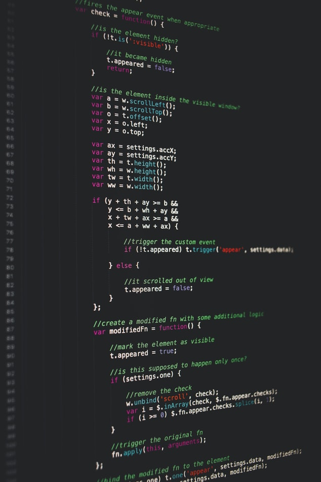

리그오브레전드 바이브에서는 웹사이트 사용증진에 따른 리그오브레전드 웹사이트 개발과 더불어 리그오브레전드 앱개발을 함께 할 수 있는 투자자분을 모십니다.
리그오브레전드 바이브는 2021년 11월 첫 개시를
시작으로 리그오브레전드 대표적인 전적검색 사이트 FOW와 OP.GG에 못지않는
유저들의 사용량을 볼 수 있습니다.
앞으로의 리그오브레전드바이브 웹사이트,어플 사용이
현재보다 더 높아질 것을
예측 할 수 있고 대표적인 전적검색 사이트 뿐 아니라 커뮤니티와 프로게이머,랭킹권
선수들의 룬페이지,템트리를 프로그램 설치해서 이용하는것이 아닌 웹사이트에서
원하는 선수,유저의 실시간 전적검색과 함께 룬페이지,템트리까지 웹에서 간편하게 자동적용까지 편리하게 가능한 사이트를 만드는게 목표입니다.
